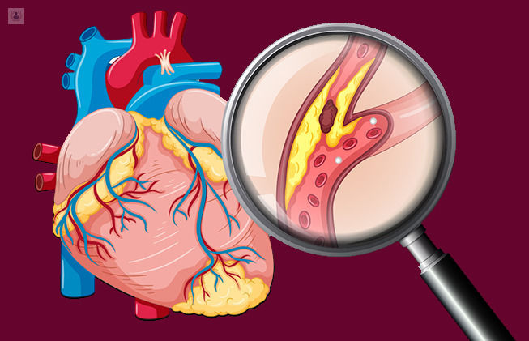

Cardiopatías isquémicas
Las cardiopatías isquémicas son básicamente cuando las mangueras que llevan sangre al corazón (las arterias) se tapan con grasa y sarro, dejando al corazón sin oxígeno para latir. En México se está así porque la mezcla de fumar, comer muchas sabritas y no moverse hace que la sangre se vuelva espesa y las arterias se cierren. Es la causa número uno de muertes en el país porque, cuando el corazón ya no aguanta más, da el infarto fulminante que no avisa.
No bajamos los números porque las jornadas laborales en México son de las más largas del mundo, lo que nos deja sin tiempo para cocinar o hacer ejercicio, viviendo en un estado de estrés crónico. Ese cansancio acumulado y la falta de sueño hacen que el corazón se desgaste mucho más rápido que en otros países. Sobrevivir a un evento isquémico o vivir con el corazón dañado te obliga a caminar con un miedo constante a que cualquier esfuerzo físico sea el último. Esa falta de oxígeno en el músculo cardíaco te va robando el aliento y la fuerza, convirtiendo tareas sencillas en retos agotadores que antes ni notabas. La persona deja de ser quien era, viviendo con una fragilidad interna que le recuerda lo caro que sale haber descuidado las arterias por tantos años.

Algunas recomendaciones para no tener esta enfermedad son:
- No consumas tabaco, ya que el tabaco es lo que más rápido tapa las arterias del corazón.
- Mete un poco de aguacate, nueces o aceite de oliva en lugar de manteca o margarina.
- Busca momentos para desconectarte del trabajo; el estrés crónico inflama el corazón.